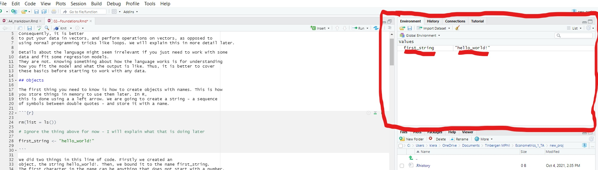

Chapter 2 Foundations
Here we go over the basic commands in R, and how R is best used. R is a ‘vectorised’ programming language - it is fastest when you perform operations on vectors. Consequently, it is better to put your data in vectors, and perform operations on vectors, as opposed to using normal programming tricks like loops. We will explain this in more detail later.
Details about the language might seem irrelevant if you just need to work with some data and fit some regression models. They are not. Knowing something about how the language works is for understanding how you fit the model and what the output is like. Thus, it is better to cover these basics before starting to work with any data.
2.1 Objects
The first thing you need to know is how to create objects with names. This is how you store things in memory to use them later. In R, this is done using a a left arrow. We are going to create a string - a sequence of symbols between double quotes - and store it with a name.
rm(list = ls())
# Ignore the thing above for now - I will explain what that is doing later
first_string <- "hello_world!"We did two things in this line of code. Firstly we created an object, the string hello_world!. Then, we bound it to the name first_string. The first character in the name can be anything that does not start with a number. string_3 is admissible, but 3_string is not. Naming an object stores it in memory, and allows us to access it later on in the code. So now if we want to access that string, we can type
first_string## [1] "hello_world!"and R gives us the string.
We can manually take a look at the objects we have stored in memory.

Open RStudio and take a look at the top right of your screen. There should be a pane called ‘environment.’ This is a record of every single object you have stored in your working memory. You should now see an object called first_string. If you click on it, you can see what the object is.
Sometimes, we will want to remove an object from our working memory. We can
do this using rm, which removes an object from your environment. If, for example,
we wanted to remove first_string we would type
rm(first_string)Note that R does not do this automatically when we run a new script. Thus, at
the beginning of each script, we should clear the environment. We do this by
running rm(list=ls()) as the very first line of the script. This is what we did at
the very beginning of this section. Otherwise, it is
very easy to introduce errors by accidentally using variables defined in another script
in a current script.
2.2 Vectors
Vectors are the most important type of object in R. Fundamentally, a vector is an ordered set of values like strings or numbers. Vectors will be the basis of the objects we use to store data later. We create them by putting elements in between c(), separated by commas.
first_vec <- c(0,1,2,3,4)The elements of a vector are ordered. R stores them in the order in which we pass them. Thus, 0 is the first element of our vector, 1 is the second and so on.
There are two types of vector: atomic vectors, and lists. The difference is that in an atomic vector, all the elements must be of the same type. In a list, the elements can be of different types. For ease, we will start by going over the basics of atomic vectors. Then, we will move on to lists.
2.2.1 Atomic vectors
There are four common types of atomic vector you will come across (plus two other rare types, that we can safely ignore for now). These are logicals, doubles, integers, and characters.
Logicals are vectors of logical operators - things
that are either TRUE, or FALSE.
We can create logicals based on conditions using the == sign. == returns TRUE
if the objects on both sides are exactly equal to each other, and FALSE otherwise.
# creating some logical conditions
3==4## [1] FALSE"cat"=="dog"## [1] FALSEf <- "cat"
"cat"== f## [1] TRUEThis will come in very handy when we want to select some variables based on the values of other variables, as we commonly do.
We can also write TRUE, FALSE more succinctly as T,F.
# Two equivalent ways of writing logicals
(1+1==2)==TRUE## [1] TRUE(1+1==2)==T## [1] TRUE(1+1==3)==FALSE## [1] TRUE(1+1==3)==F## [1] TRUEInteger is what is sounds like - a vector of integers. We use doubles to represent numbers that may not be integers. A double can be any type of number, including integers and decimals (or ‘floating point’ numbers as programmers often call them). We can generate a vector containing a range of integers by passing a starting integer, followed by a colon, followed by the final integer. Finally, character vectors are vectors of strings.
# Lets make a vector of each type
first_log_vec <- c(TRUE, FALSE, TRUE)
first_int_vec <- c(1,2,3)
int_range_vec <- c(1:10)
first_double_vec <- c(1.1, 2.2, 3.3)
first_char_vec <- c("my", "first", "character", "vector")typeof() tells you the type of your vector, and length() tells you how
many elements are in it.
# Looking the type of the first vector, and length of the second
typeof(first_log_vec)## [1] "logical"length(first_int_vec)## [1] 3You can merge two atomic vectors by putting them in a larger vector.
# creating two small vectors
vec_1 <- c(1,2,3)
vec_2 <- c(4,5,6)
# merging them into one big vector
big_vec <- c(vec_1, vec_2)Putting a set of vectors together like this ‘flattens’ them. What we get out of the above is not a vector containing a set of vectors, each containing numbers. Instead, we get out a single vector that contains all of the components of the set of vectors together in the order that we passed them.
2.2.2 Lists
A list is a vector comprised of elements of multiple types.
# making a list
first_list <- c("hello_world!", 1)We can turn something into a list explicitly by using list.
# making a list more explicitly
second_list <- list("hello_world!", 1)Lists are very useful in practice because they can be recursive. Elements of lists can be other lists or vectors, R does not flatten lists like it does atomic vectors.
Lists are thus useful when we want to store a set of objects, but preserve some internal structure. An example from econometrics, which we will see later, is collecting standard errors for different regression specifications. When we create a regression table, we often want to pass a list of standard errors to tell us how precise our estimates are. Yet, we also want to keep the standard errors of each model together so we do not mix standard errors of different models up. A way we can achieve this is by storing the standard errors for each model in its own vector, and then placing those vectors into a list. The vectors keep the standard errors of the estimates from each model together and separate.
We can also flatten lists if we want to by
using unlist. Again, we will see how this is useful later.
# demonstrating the nested structure in lists
# imagine these are the two outputs of standard errors from our variance-covariance
# matrix
se_1 <- c(0.3, 0.4, 0.5)
se_2 <- c(0.4, 0.5, 0.6, 0.7)
# now lets create a list with a nested structure
se_list <- list(se_1, se_2)
# now if we take a look at the list, we can see the nested structure
se_list## [[1]]
## [1] 0.3 0.4 0.5
##
## [[2]]
## [1] 0.4 0.5 0.6 0.7# selecting the first or second element of the list will give us
# the coresponding vector.
# Now, imagine we want to flatten the list i.e remove the nested structure
flattened_se_list <- unlist(se_list)
flattened_se_list## [1] 0.3 0.4 0.5 0.4 0.5 0.6 0.72.2.3 Working with vectors
As mentioned above, vectors have an order. We can use this ordering to select elements from vectors. This is called ‘slicing.’ We do this by putting square brackets after the name of the vector, containing positions of elements within the vector. You can select a single element of the vector by putting a single number in the brackets that corresponds to the position of that element in the vector. You can select the nth to n+kth element of the vector by passing n:n+k. You can create any combination of those elements by passing the positions of the elements you want to select as a vector.
# lets slice the vector we created earlier
big_vec[1]## [1] 1big_vec[6]## [1] 6big_vec[2:3]## [1] 2 3big_vec[c(1, 2:3, 6)]## [1] 1 2 3 6We can add, subtract, multiply, and divide numbers using +, -, *, /. These also work for vectors. They perform the operations on the vectors elementwise.
# Using some basic mathematical operators
# on integers/doubles
1+1## [1] 21-1## [1] 01*2## [1] 21/2## [1] 0.5# on vectors
big_vec + 1## [1] 2 3 4 5 6 7big_vec - 1## [1] 0 1 2 3 4 5big_vec* 2## [1] 2 4 6 8 10 12big_vec / 2## [1] 0.5 1.0 1.5 2.0 2.5 3.0# notice that each of these returns a vector of results, where each element is
# the result of the operation on the element of the previous vector.In practice, you will see many vectors that contain missing values. R denotes missing values with NA. R also has useful commands to find these missing values.
is.na() returns a logical vector of the same length as the original vector.
Each element corresponds to the element in the original vector. It returns
TRUE if this is missing, else FALSE. The any() and all() commands tell us
if any or all of the elements of a vector satisfy a logical respectively. The first
returns TRUE if at least one of the elements of the vector satisfies the logical,
else FALSE. The second returns TRUE if all of the elements of the vector satisfies the logical,
else FALSE.
We can combine these with is.na()
to screen for NAs.
# Lets look for some missing values
# here's a vector with a missing value
missing_value_vec <- c(1,2,NA,4,5)
# now lets see where that missing value is
is.na(missing_value_vec)## [1] FALSE FALSE TRUE FALSE FALSEany(is.na(missing_value_vec) == T)## [1] TRUEall(is.na(missing_value_vec) == T)## [1] FALSENotice that in the middle, we have specified a logical condition
using ==.
Vectors can also have attributes - metadata that we attach to the vector object. The most important of these to know are names and dimensions. R constructs objects that we store data in like matrices and dataframes as multi-dimensional vectors.
2.3 Functions
A function is a map from some arguments to an output. In programming, it takes some things in and performs some operations on that thing. Thus, they are incredibly common. One of the main things we want to do in R is use functions - by taking others’ from packages and making our own.
2.3.1 Functions from packages
A package is a collection of functions that other people have written. Normally,
these have a theme. For example, plm is a package of functions for fitting
panel data models. Thus, it contains a set of interconnected functions you can
use to do lots of things with panel data.
Packages are incredibly useful. Using functions from packages is the main way of performing operations in R. Most programmers upload their packages to the ‘Comprehensive R Archive Network’ or ‘CRAN’ for short https://cran.r-project.org/. All packages on CRAN have ‘vignettes’ - a pdf file describing all of the functions that are in the package with examples of how you might use them.
To use a package, you first have to download it onto your computer. To do this,
you have to run install.packages() with the package name between double quotes within
the brackets. Thus, to install plm, we run install.packages("plm") in the
console.
Once you have a package on your computer, you now have the option to use it in
your scripts. To use a package in a script, you need to write library() with the
package name before the point you use any functions from the package. If we want
to use function from plm, we have to write library(plm) in our script before
we use the function.
Once we load a package, we can look at the functions in the package using the package explorer on the right in RStudio. Run a function from a package by typing the name of that function.
If we have a function from a package and want to easily look up the vignette, we
can do this by typing the function name, preceeded by a question mark ?. This
brings up the entry from the package vignette on the right hand side of the RStudio
viewer.
# Some examples of finding the documentation for a specific function
# imagine we want to find the vignette for the summary function in base R -
# we would run
?summary## starting httpd help server ... doneThe output for the inbuilt (or ‘Base R’) summary is as below.
Imagine here that we had multiple objects called summary from different packages
that we might use. We can specify which package we want to select the function from by preceeding the function
with the package name and a double colon ::. Our version of summary is from base R - the set of functions
that come with the R distribution itself. To call that summary specifically, we
can run base::summary.
# Some examples of finding the documentation for a specific function
?base::summary
# now imagine we want the documentation for the group_by function from the
# package dplyr
?dplyr::group_by
# notice we can get the documentation without actually loading the package!
# But if we wanted to actually run the function we would need to load
# the package of course2.3.2 Defining your own function
It is very easy to define functions in R. They are particularly useful in R because
they allow you to iterate in a vectorised way by applying a function to a vector.
We will see this later. We store functions as
objects with the name of the function as the object name. We follow this by the command
function(). The arguments to function() are the arguments of the function. We
enclose the body of the function in curly brackets. At the end of the function,
we specify what we want to return from the function within return().
Once we have our function, we can run it with the name, followed by the value of the arguments within brackets.
# lets define our first function - squaring
# This takes a numeric argument `x' and returns its
# square
square_things <- function(x){
y <- x**2
return(y)
}
# I could have also written this in one line as return(x**2) of course
# now lets square something
square_things(22)## [1] 484square_things(7)## [1] 49Of course, we can nest functions if we want to chain some operation and write that in an efficient way.
square_things_add_two <- function(x){
y <- square_things(x) + 2
return(y)
}
square_things_add_two(7)## [1] 51Notice that all the objects we define within the function are ‘local’ - they do not exist in our environment outside of that function. If we try to look for them in the environment pane, they are not there. Thus, if we try to get y outside of the function above, it will return nothing (or worse, something else we have called y that we do not want!). Objects we define outside of functions, by contrast, are global – they exist in the whole environment. Global objects are the ones we can see in our environment pane.
2.4 Iteration
Imagine we want to do some operation to lots of things - for example squaring
a vector of numbers. Applying an operation to each of those things is called
‘iteration.’ We can iterate in R using for and while loops as you might have
seen in other programming languages.
# making a for or while loop in R
for (i in range(0,10)){
print(i**2)
}## [1] 0
## [1] 100j <- 0
while (j < 10){
print(j**2)
j <- j+1
}## [1] 0
## [1] 1
## [1] 4
## [1] 9
## [1] 16
## [1] 25
## [1] 36
## [1] 49
## [1] 64
## [1] 81If we want to select some variables based on conditions, we can use if and
else statements.
# if-else
x <- 3
if (x==3){
print("X is three!")
} else {
print("X is not three :(")
}## [1] "X is three!"R is, however, a vectorised programming language - it is designed to perform operations directly to vectors. Looping does not do this. When we write a loop, we take an object from the set of objects we want to iterate over, apply the operation directly to that object. We then select the next object, apply the operation to that object, and so on. This suggests a quicker and more robust way to iterate - store the objects we want to iterate over as some sort of vector, and perform the operation directly on the entire vector at once.
More precisely, we should iterate by designing a function, setting up a vectorised object,
and applying the function directly to the vectorised object. In R, we do this using the apply
family of functions, and it is called applying.
There are four of these functions - sapply, lapply, apply, and tapply.
The most common to use are lapply and sapply.
lapply takes a list, a function,
and a vector of additional arguments to the function. It applies the function to
each value of the original list, given the parameters, and returns the list of
those values. sapply takes a vector, a function,
and a vector of additional arguments to the function. It applies the function to
each value of the original vector, given the parameters, and returns the vector of
those values.
# examples of iteration by applying
vec_of_numbers <- c(0:10)
squares_vec <- sapply(vec_of_numbers, FUN=square_things)
list_of_numbers <- as.list(c(0:10))
sqaures_list <- lapply(list_of_numbers, FUN=square_things)
# notice that we can get the same thing as above by flattening the list
squares_vec_2 <- unlist(sqaures_list)apply and tapply are less common to use. apply does the same as lapply
and sapply above, but takes in and returns a data.frame or matrix instead
of a list or vector. We will learn what those objects are in the next and fifth
section respectively. tapply takes in a vector containing factor variables and
computes a function for another vector by the levels of the factors. This can be
very useful for summarising data - for example taking means by groups.
applying is much more efficient for most operations than a loop. Of course, for small
operations, there is a trade off between run time and developer time. Often it is
easier to just write a loop. We cover some more efficient iteration methods in
final section if you are interested to learn more.
2.5 Style
Now you know how to write some R, it is important to know how to present it in a nice way. Writing readable code is very important for a couple of reasons. Firstly, others might read your code. Secondly, your future self will almost certainly read your code to find some operation you have written before and want to do again. In either case, we want that person to be able to find and interpret it easily. Thus, we need to write code in a consistent and interpretable style. The usual style in R is based on the Google Style guide for R https://google.github.io/styleguide/Rguide.html. We base this section on the synopsis by Hadley Wickham at http://adv-r.had.co.nz/Style.html .
Here, I quickly go over the main points. Writing readable code takes practice, but pays huge dividends.As always with style guides, do what we say and not what we do.
2.5.1 File names
File names should be meaningful - so if our script does x we should call it do_x.R.
If running scripts in order, prefix with numbers e.g 1-do_x.R, 2-do_y.R.
2.5.2 Object names
Object names should be lower case - so xyz as opposed to Xyz or XYZ. Separate
words in a name with _ - so x_vec as opposed to xvec. Variable names should
be nouns, function names should be verbs. Names should be concise but meaningful.
Do not name your object the same as an inbuilt object - like list. At best it will
confuse your reader. At worst, you can overwrite the inbuilt name in your environment
and cause a load of problems for yourself.
2.5.3 Syntax
Spacing should be as in English - so spaces after commas, mathematical symbols and
so on. The exceptions to this are for colons, variables within brackets - so (x)
not ( x ), or if it leads your code to line up in a nicer way. Try to keep code
within 80 spaces from the beginning of the line. This means that it will fit on
a single sheet of A4 paper if you need to save it to a document (say for a coding
test for a job). RStudio places
a vertical line in the editor at 80 spaces in that you can use to measure this.
When we use curly brackets, the second curly bracket should go on its own line
unless it is followed by else.
x <- 3
if (x==3){
print("X is three!")
} else {
print("X is not three :(")
}## [1] "X is three!"Indent in the same block with two spaces, except when you are indenting an argument within brackets. Then, indent to the beginning of the arguments.
very_very_long_function<- function(a= "very_very_very_very_very_long_argument",
b= "another argument"){
return(print(a))
}2.5.4 Commenting
Comment your code! Caring about commenting seems silly, but is actually very
very important. It is very hard to interpret someone else’s or your own past
code without commenting. Comment frequently using the #. Comments should
explain what the function or line of code is doing.
# now lets create a variable that stores the string "hello_world"
hello_world_string <- "hello_world"
# lets print it
hello_world_string## [1] "hello_world"Break scripts into sections, and delimit these sections with # followed by
a name saying what the section is doing, followed by --- up to the line in the
IDE. This best allows you to easily find the area of the code you want.
A common thing to do is to first have a section where you read in the data, then
one containing all of your functions, and then one where you run your models (which
you may or may not break into further sections. At the beginning of a script,
add a line explaining what the code is doing and the name of the person who made
it.
# Example section breaks for an assignment with a series of questions
# Code for assignment 1
# Your group name
rm(list=ls())
# reading in data -------------------------------------------------------------
# code for reading in our data
# functions --------------------------------------------------------------------
# whatever functions we want to use
# question 1 -------------------------------------------------------------------
# code where we compute what we need for question 1
# question 2 -------------------------------------------------------------------
# code where we compute what we need for question 2